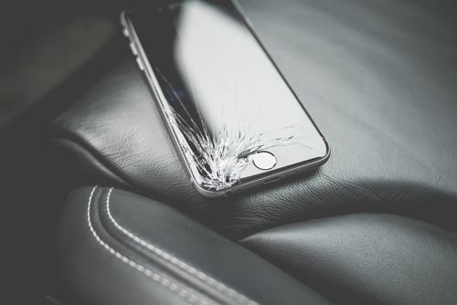

Windows Issues
My Computer Has Become Very Slow — How Do I Make It Fast Again?
A PC that used to start in 30 seconds now takes 5 minutes — five free fixes before you spend anything.

Suddenly the whole screen turns blue with white text and the PC restarts. This is the famous "Blue Screen of Death" (BSOD). It means Windows hit a serious error it could not survive — usually a bad driver, faulty RAM, a dying hard drive, or overheating. One blue screen is a warning; repeated blue screens mean something hardware-related is failing and needs attention.
Keep a small log of when blue screens happen - the app open, the time, what was plugged in. After three or four entries, a pattern almost always appears, and the pattern points at the guilty component faster than any diagnostic tool.
The stop code on the blue screen names the failing part of the system. Match yours to the row below and fix that component only.
| Stop code on screen | Usual culprit | Typical fix |
|---|---|---|
| MEMORY_MANAGEMENT | Faulty RAM or a bad driver | Run Windows Memory Diagnostic overnight |
| DPC_WATCHDOG_VIOLATION | Storage driver conflict | Update SSD firmware and chipset drivers |
| KERNEL_POWER | Power supply or overheating | Clean the dust, check the PSU, monitor temps |
| DRIVER_IRQL_NOT_LESS_OR_EQUAL | A specific driver, often network or audio | Note the .sys file name, update that driver |
A PC that used to start in 30 seconds now takes 5 minutes — five free fixes before you spend anything.
Wi-Fi drops every few minutes on Windows 11? Nine fixes in the order that actually works — 10 minutes and you’re stable.
PC crawling after a Windows update? It’s usually one of three things — and none of them is “buy more RAM” (yet).